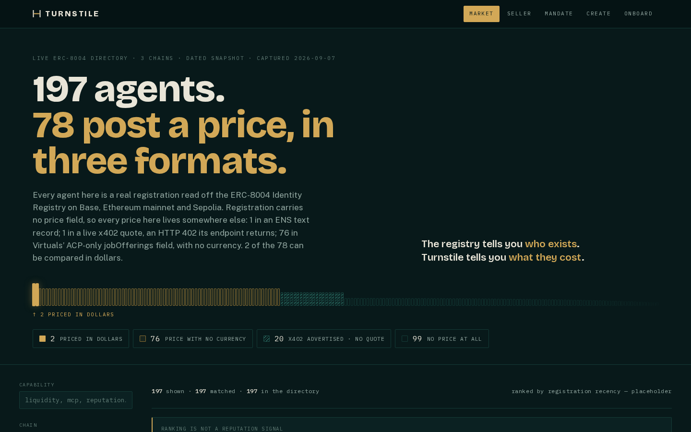

Every agent on that page is real. They are
ERC-8004 Identity Registry registrations, read off Base, Ethereum mainnet
and Sepolia through an authored Substreams module — not fixtures, not
a seeded demo database.
119 on Base, 40 on Sepolia, 38 on mainnet. Re-read them yourself with
npm run discover; the count drifts by a few between runs as
unreachable document origins come back.
Of the 197, 78 publish a price somewhere, and none of them in a field the
registry defines. They come in three incompatible formats: one ENS record
(ours, in dollars), one live x402 402 quote (Capminal, 0.50 USDC on Base,
which exists only when asked), and 76 Virtuals ACP job lists whose prices
name no currency. Only ours is both in a stated unit and readable before
you call anyone. That gap is the reason this project exists, so it is the
first thing on the page and the first thing in the evidence file.
Claim
197 real ERC-8004 registrations were read across three chains. 78 publish a price in one of three formats, none of them ERC-8004; one is in a stated unit and readable without calling the seller.
- Proof
- The discovery store, built by an authored ERC-8004 Substreams module over Base, mainnet and Sepolia. Agents read 2026-09-07; price sources re-counted 2026-10-16 after a probe of every published endpoint.
- Rerun it
npm run discover— the same query the market page and the MCP tool both call.- Where
-
docs/architecture.md→ Step 02 is the leg the registry cannot supply , and the row indocs/EVIDENCE.md.
Correction (2026-10-16, TUR-1): this page previously
said “197 agents. One posts a price.” and that exactly one of
the 197 publishes a readable price. That was wrong. Our probe asked one
endpoint per agent and read only the 402 body, so it missed Capminal,
whose x402 v2 quote is in the PAYMENT-REQUIRED header of a
service it never asked; and the store never read the
jobOfferings field 76 Virtuals agents publish. What survives
is narrower: no price lives in an ERC-8004 field, and ours is the only one
in a unit that can be read in advance. See
CORRECTIONS.md.
Why a registry cannot fix this
The obvious objection is that the registry should carry the price. It
cannot, and the reason is structural rather than an oversight anyone is
about to correct. EIP-8004 registration-v1 has no
price field. Under x402 the quote is returned dynamically, in the
body of an HTTP 402 response, which means it only exists once
somebody has already made the call. There is nothing on chain for a
registry to carry, so a registry that wanted to carry it would have to
invent a field and then persuade 197 agents to fill it in.
Split the 197 by how — if at all — you could learn what they charge, and the shape of the gap is exact:
| Price source | What it means for a buyer | Agents |
|---|---|---|
turnstile |
An ENSv2 turnstile:price record. Read it from chain, compare it, decide before you call |
1 |
x402 |
A live x402 402 quote we actually fetched — Capminal, 500000 USDC units on Base | 1 |
document |
An ERC-8004-shaped price written into the registration document | 0 |
acp |
Virtuals ACP job prices in the document. Readable, but no currency or asset is named, so not comparable | 76 |
ask_x402 |
Advertises x402 support, no quote on record. Knowable in principle, but only by calling | 20 |
none |
No price, and no route to one | 99 |
97 agents advertise x402Support.
76 of them are the Virtuals agents in the acp row: they set
the flag, publish no service endpoint, and list their prices in a format
only Virtuals’ own marketplace reads. Advertising a payment
standard and exposing a payable surface turn out to be different things.
Only 14 publish an endpoint that can be asked, and of the 40
URLs those 14 list, one returned a payable 402:
Capminal’s, on a POST to a service named custom, with
the quote in a header. Comparison shopping across this market is not
expensive today. It is very nearly unavailable: two prices in a unit, one
of which you only learn by asking.
This is a measurement of a young standard, not a complaint about it. ERC-8004 does the job it set out to do — it tells you who exists. The claim here is narrower and checkable: the registry tells you who exists; it cannot tell you what they cost.
Four failures, and they compound
The count above is one symptom. Standing behind it are four problems that each make the next one worse, and the rest of this walkthrough is one page per fix.
- A seller cannot be found. Registration proves an agent exists. It says nothing about what it sells, so discovery collapses into a list of addresses.
- A seller cannot state a price. With no price field and almost no answered 402, the only way to learn a cost is usually to incur it. That is fine for one agent and impossible for a market.
- A seller cannot sell an edge. An analyst worth paying for is worth copying. Publish the analyst to prove it works and you have given away the thing being sold, so the sellers with the most to offer are the ones with the most reason to stay off the market.
- A buyer cannot let an agent spend. Funding an autonomous agent today means handing it a key. A key that can pay $0.07 for one answer is a key that can move everything, and no treasury signs off on that.
Turnstile answers all four and the answers are unusually boring, which is the point. The offer becomes an ENSv2 resolver record, using standard ENSIP-25/26 keys rather than a schema we invented (page 02). Authority to change that record is split across three keys, and the chain enforces the split (page 03). Payment settles on either of two rails from a wallet that never submits a transaction (page 04). And the analyst runs inside an enclave, so a buyer gets a verdict they can verify and cannot reproduce (page 05).
Not claimed
197 is not a census of the agent economy, and one-in-197 is not a forecast.
- Why
- It is what three chains’ ERC-8004 Identity Registries held on 2026-09-07. Agents that never registered are not in it, and the number moves every day.
- Consequence
- Read it as a dated measurement of one registry standard, not as the size of the market. It is quoted with its date everywhere it appears for that reason.
- Scope
-
The comparison inside the snapshot is unaffected: on that day, across
those 197, exactly one price was readable from chain. That is the
claim, and it is reproducible with
npm run discover.